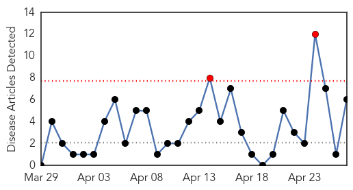
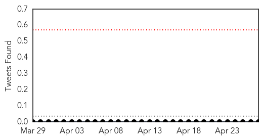
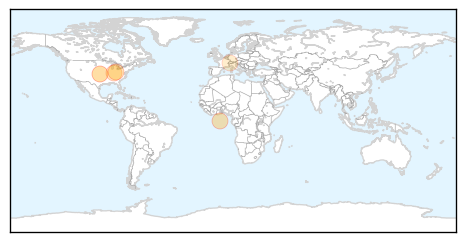
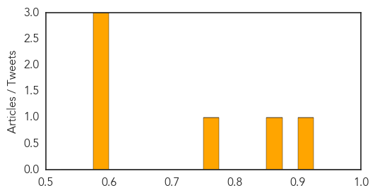
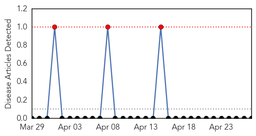

Hepatitis
30-Day Web Trend
2 alerts, 0 warnings

30-Day Twitter Trend
0 alerts, 0 warnings

Article Locations
Article Confidences
Top Articles:
- 0.921
- Doctors encourage patients to get tested for STDs
- 0.869
- Increased testing to ‘contain’ rising STD rates
- 0.768
- Indiana has 'one of the worst' HIV outbreaks
- 0.588
- Novartis announces Phase III study of Arzerra® met primary endpoint of improved progression-free survival in patients with relapsed CLL
- 0.582
- HIV & AIDS Information :: New EASL guidelines prioritise interferon-free hepatitis C treatment
- 0.581
- The hepatitis A virus – an overlooked cause of foodborne disease
Top Tweets:
-
No tweets found for Apr 27, 2015
Mumps
30-Day Web Trend
3 alerts, 0 warnings

30-Day Twitter Trend
0 alerts, 0 warnings

Article Locations

Article Confidences

Top Articles:
-
No articles found for Apr 27, 2015
Top Tweets:
-
No tweets found for Apr 27, 2015